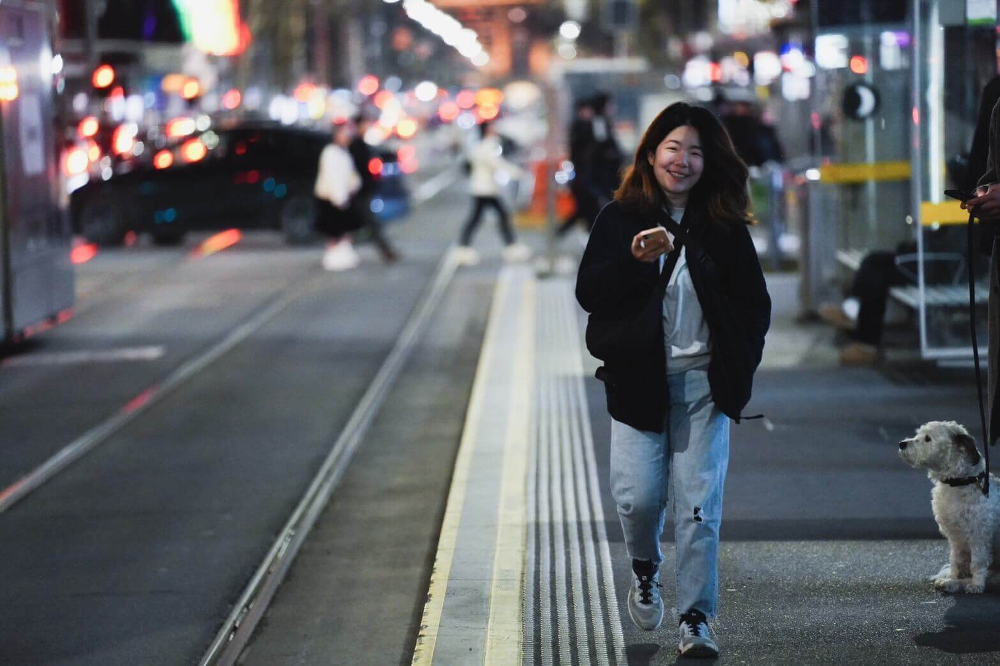

Enn-wen Lau劉依雯
a.k.a. Evonne Lau — a product designer based in Kuala Lumpura.k.a. Evonne Lau——來自馬來西亞的產品設計師
I design clean, friendly interfaces. Cat mom of 3, caffeine-dependent, certified weirdo. I love the outdoors — until I fall down a rabbit hole and vanish indoors for a week straight. Currently in an Arduino-shaped hole. Send help, or spare LEDs. 養著 3 隻貓的怪咖，咖啡因重度依賴者。我喜歡戶外活動，但也可以整整一週窩在家裡不出門。目前沒有出門計劃因為我正忙著研究Arduino。
Get in touch聯絡我

💻 Self-taught💻 自學成才的
Product designer 👩🏻💻產品設計師 👩🏻💻
Ex-web dev 🔨前網頁工程師 🔨
🙌🏻 Merge conflict survivor 🎉🙌🏻 Git Merge倖存者 🎉

Enn-wen is my legal name. Evonne is the one I picked up along the way — it comes from my Chinese name, 依雯, pronounced Yi-wen. Confusing even on paper.
「依雯」是我的中文名，Enn-wen 是身分證上的法定名字，Evonne 則因為發音和中文名相近，後來成了我比較常用的名字。
I started as a web developer, until my first git merge conflict ended in a staring contest I lost badly. That’s the day I decided to make things look right instead of fighting my code for it. Self-taught my way into UIUX in 2020 and never looked back, though I still love coding for fun, most recently trying to make Arduino boards behave.
我一開始是網頁工程師，實在受不了每次 git merge 時遇到 conflict，也發現程式碼不是我的摯愛，毅然決然地決定轉換跑道（不過骨子裡還是喜歡寫寫程式當作愛好）。2020 年開始自學 UIUX，從此找到了自己的職涯目標。
Also did a working holiday in New Zealand in 2024, lived in a town so small it had a population of 114. I basically knew everyone by week two. Worked front of house, made coffees, served customers, and somehow made some genuinely great local friends along the way.
2024年我去了紐西蘭打工度假，待在一個小到只有 114 人的小鎮。第二週我大概就認識全鎮的人了。做過外場、煮過咖啡、招呼過客人，還意外交到幾個真心不錯的當地朋友。
Off the clock: chasing good photos, indie games, hoarding stickers, and explaining to my cats why I can’t play right now.
不在電腦前面時我會到處拍照、打打遊戲，我也超喜歡囤積貼紙，有時候忙到需要跟我家貓咪解釋為什麼現在不能陪牠們玩。
Experience工作經歷
| May 2021 – Present2021年5月 – 至今 | Freelancer接案設計師 | UI/UX DesignerUI/UX 設計師 |
| May 2025 – June 20262025年5月 – 2026年6月 | Funhub TV Sdn Bhd | Product Designer產品設計師 |
| Nov 2024 – Apr 20252024年11月 – 2025年4月 | iMoney | UI/UX DesignerUI/UX 設計師 |
| Jan 2024 – Sept 20242024年1月 – 2024年9月 | Working Holiday打工度假 | Career Break職涯空檔 |
| Mar 2022 – Dec 20232022年3月 – 2023年12月 | Hiredly | UX/UI DesignerUX/UI 設計師 |
| Nov 2020 – Jan 20222020年11月 – 2022年1月 | Green-i Multimedia Sdn Bhd | Web Designer網頁設計師 |
| May 2019 – Nov 20202019年5月 – 2020年11月 | GoodPeople Co | Junior Web Developer初級網頁工程師 |